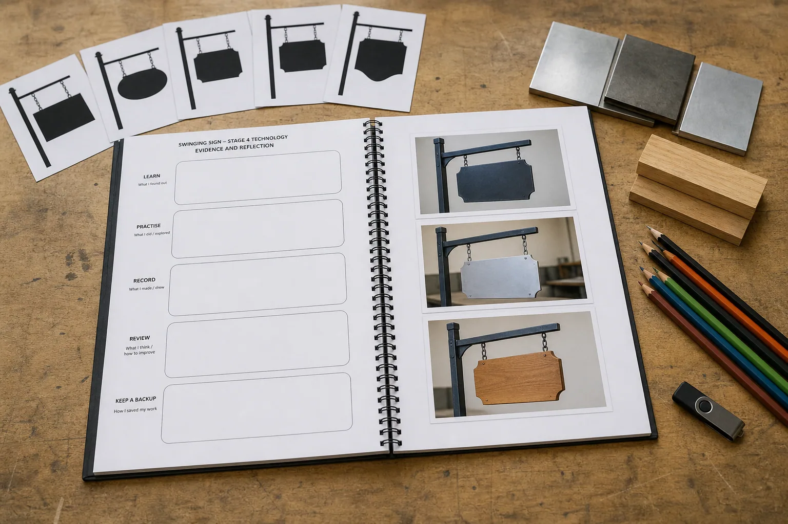

Read substantial theory and inspect a visual that has one clear teaching job.
Stage 4 Technology · Materials and production processes
Swinging Sign
Investigate a need, communicate a metalwork design, plan with care, produce only through teacher-authorised processes, and evaluate the evidence behind the result.
Five-week source guide · whole-number lesson count and local rotation are Teacher to confirm.

Your design challenge
Create a purposeful metal product through an approved project pathway.
The Swinging Sign is the primary pathway. Your teacher may instead select the LED tea-light holder or scrolled pot-plant holder, or use either as additional work. The same evidence rhythm connects all three.
Complete ten feedback-rich questions after every named section.
Build one scaffolded explanation and a concept-linked activity.
Use My folio and export a device-local backup before submission.
Student evidence: writing autosaves in this browser. It is formative learning evidence, not a Classroom submission or teacher verification.
Five-module pathway
From need to evaluated result
1
Module 1
Brief and readiness
Read the need, compare the three project pathways and prepare to work responsibly within local workshop instructions.
Open Module 1 →2
Module 2
Communicate the design
Turn an idea into clear sketches, an Onshape model, annotations and feedback-ready design evidence.
Open Module 2 →3
Module 3
Plan for production
Connect material properties, efficient layout and Onshape drawing readiness to an explicit teacher approval checkpoint.
Open Module 3 →4
Module 4
Produce and control quality
Follow an authorised sequence, monitor quality and keep useful evidence without replacing local demonstrations.
Open Module 4 →5
Module 5
Finish, test and evaluate
Judge finish, stability, function and feedback against confirmed criteria, then propose a worthwhile improvement.
Open Module 5 →
Connected evidence
Your folio grows alongside the project.
Keep the brief, concept decisions, material reasoning, approval checkpoint, process evidence, quality checks and evaluation in one calm browser-local system.
Before practical work: follow only the plan, demonstration, PPE, supervision, machine permissions and risk controls supplied by your teacher. This site teaches transferable design-and-production thinking; it does not replace local workshop instruction.